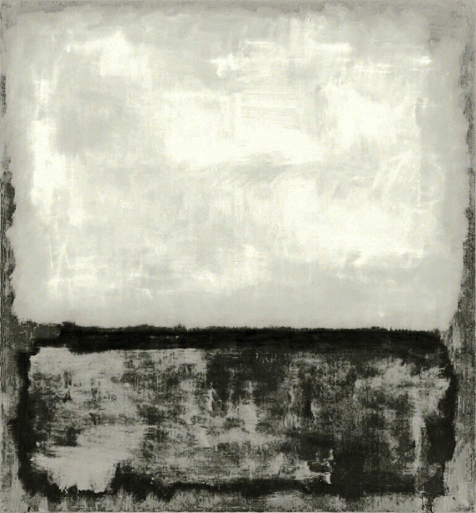
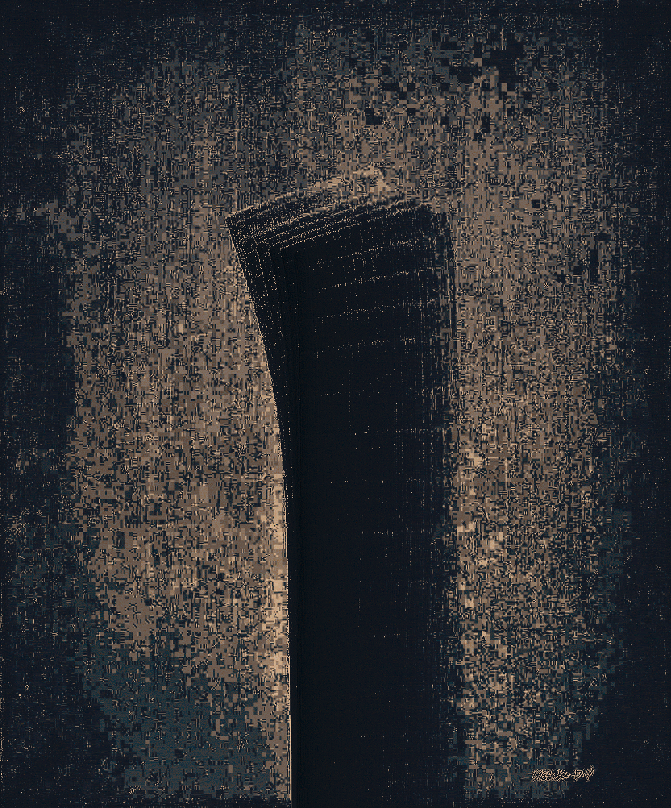
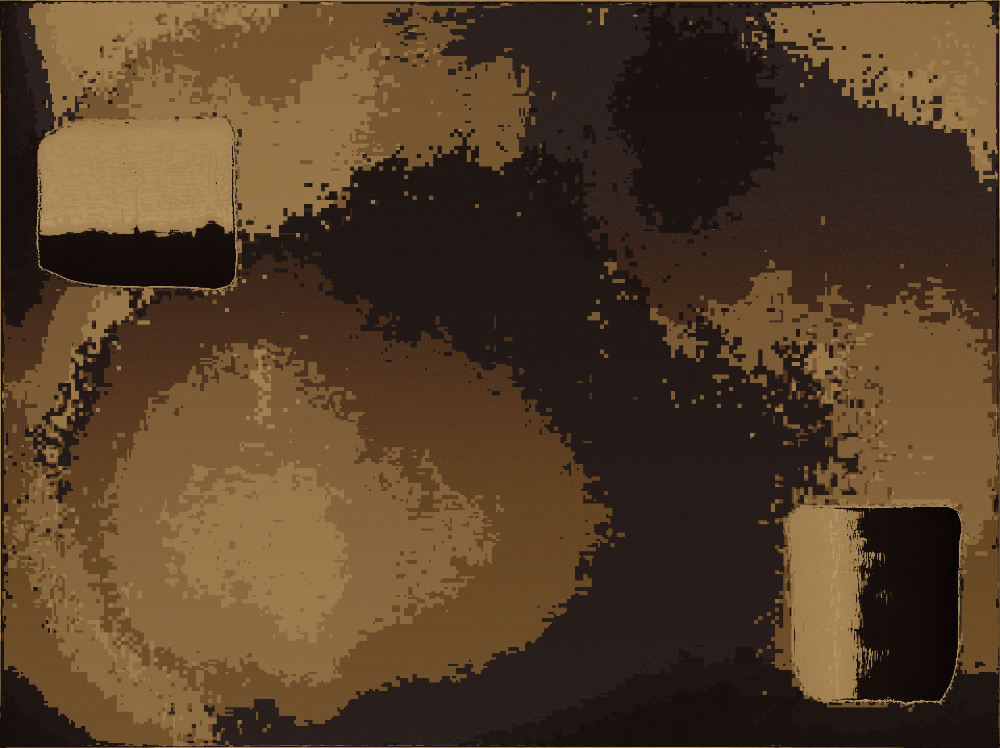
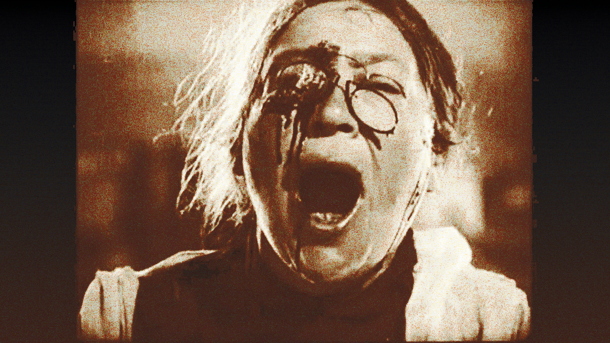

i will write about this once i've done more of the site. for now, feel free to interpret it as you please.

Clyfford Still's PH-144 (1947-Y-NO.1) (1947) as Barnett Newman's Onement I (1948) (2024)
Portrait of V.I. Lenin with Cap, in the Style of Jackson Pollock III (1980), in the Style of Mark Rothko's No. 14, 1960 (1960) (2024)

Robert Rauschenberg's Erased de Kooning Drawing (1953) redrawn with Willem de Kooning's Woman and Bicycle (1952-53) (2024)
Yun Hyong-keun's Burnt Umber & Ultramarine (1973) as Lee Dong-youb's Untitled (1988) (2024)
Yun Hyong-keun's Burnt Umber & Ultramarine (1984) as Lee Ufan's Dialogue (2015) (2024)
study after Eisentstein's The Battleship Potemkin (1925) using Diego Velázquez's Portrait of Pope Innocent X (1650) [after Francis Bacon's Portrait of Pope Innocent X (1953)] (2024)